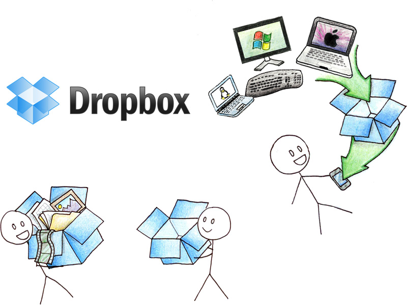

Dropbox:
Sustaining Millions of File Per Day
Dropbox was founded in June of 2007 by Drew Houston and Arash Ferdowsi and is now headquartered in San Francisco, CA with a rough estimate of 110 employees. With over 50 million users, one million files saved every 3 minutes, and 500 million files saved daily; Dropbox has to have a reliable strong technology stack to support the mass amount of traffic everyday.
Software Choice:
When it comes to the language the software is written in, 99% of the code was written through Python. By using Python, Dropbox was able to scale up to 40 million users without writing thousands of lines of C code. Similar to the idea YouTube originally had with Python, the development speed benefits from using Python can largely outweigh the additional processing time and server cost for a company starting out. Yet in the past year of two, Dropbox has been feeling the cost of using Python heavily throughout their product. As a response, roughly in 2013 Dropbox started to migrate their performance critical backends form Python to Go to leverage faster execution speeds and better concurrency support.
In the process of moving to Go, Dropbox ended up creating new libraries for Go considering its infancy as a language, and made all the libraries open source. The libraries include: caching, errors, database/sqlbuilder, memcache, net2, and hash2. (Patrick Lee) With this step forward in performance, Dropbox tends to continue to move legacy code to Go where performance gains can be made.
Database:
For databases Dropbox used MySQL. Rajiv Eranki, an early Dropbox employee, worked on scaling the platform and said with the use of MySQL “Joins across databases had to be separated, and there was a lot of denormalization. Yet he would not have changed a thing.” (Mike Butcher) From this Dropbox was able to form benefits such as running queries on the users behaviors very easily, could do Joins across databases as they needed, and the structure allowed for fixes from bugs easily through queries in MySQL. Also with the setup, users who may have had large folders only had to make one query to the database. This in term translated into vast amount of flexibility for a growing company.
 Where ever you are, share with confidence and feel safe and secure doing it.Storage/AWS:
From the beginning of Dropbox they have used Amazon Web Services (AWS) such as S3 and EC2. They ran a hybrid model that leveraged the EC2 and S3 along with co-location datacenter. For storage Dropbox uses S3, which is Amazons simple storage service with secure, durable, highly scalable object storage. Then for serving file blocks they use amazons EC2 that acts as a virtual computer for users to run their own applications on.
You had me at secure storage.
Front End Server:
Dropbox uses Nginx for a front-end server of their product. Nginx is an open source proxy and web server that is used for serving up static content super-fast. It uses less memory than Apache and does not have the same memory-related capacity issues as Apache. These are just some of the reason company’s like Dropbox, Netflix, Facebook, Hulu, Zappos, Zynga and more.
According to Nginx, they include these features and more:
- Supports Memcache and WebSocket
- Provides edge caching and HTTP compression
- Provides SSL and SPDY acceleration
- Load Balancing
- On-the-fly configuration
- Remote syslog logging for security and performance monitoring
- Video streaming of different formats
- Low memory footprint Web server
- Proxy for PHP, Ruby, Java (application servers), FastCGI, uWSGI, and HTTP (web) servers
- Export performance monitoring information in JSON format in real time
Additional Technology:
- Paster/Pylons/Cheetah (web framework — minimal use beyond templating and handling form input)
- Memcached in front of the database and for handling inter-server coordination
- Ganglia for graphing, with drraw for custom graphs like the stack graph mentioned above/li>
- Haproxy for load balancing to app servers, after Nginx (better configurability than Nginx’s balancing modules)
- Nagios for internal health checks
- Pingdom for external service monitoring and paging
- GeoIP for mapping IPs to locations